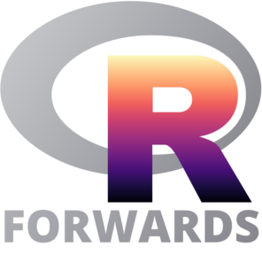

class: center, middle, inverse, title-slide # Unit Testing ### Forwards Teaching Team<br><br> ### <br><i class="fab fa-twitter "></i> <a href="https://twitter.com/R_Forwards">@R_Forwards</a><br><a href="https://forwards.github.io/" class="uri">https://forwards.github.io/</a> ### <br> updated: 2020-03-05 --- class: inverse center middle # Why test? --- class: clear center middle font200 Improve readability or performance without changing behaviour. --- class: clear font200 ## Coding is Iterative We build new functions one bit at a time. What if a new thing we add changes the existing functionality? How can we check and be sure all the old functionality still works with New Fancy Feature? Unit Tests! --- class: inverse center middle # Unit Testing --- class: clear font200 # Set up test infrastructure ```r usethis::use_testthat() ``` ``` ✔ Adding 'testthat' to Suggests field ✔ Creating 'tests/testthat/' ✔ Writing 'tests/testthat.R' ✔ Writing 'tests/testthat/test-zooSounds.R' ● Modify 'tests/testthat/test-zooSounds.R' ``` ```r devtools::test() ``` Or Command + Shift + T --- class: clear ## Tests are organized in three layers <img src="../../pics/test_organization.png" width="800px" /> --- class: clear font200 ## Organizing Tests Test every individual task the function completes separately. Check both for successful situations and for expected failure situations --- class: clear font200 Four expectations cover 90% of cases ```r expect_equal(object, expected) expect_error(object, regex) expect_warning(object, regex) expect_known_output(code) ``` --- class: clear font200 Our Example Function ```r animalSounds <- function(animal, sound){ assertthat::assert_that( assertthat::is.string(animal), assertthat::is.string(sound)) paste0("The ", animal, " goes ", sound, "!") } ``` --- class: clear font200 ## A sample test In `tests/testthat/test-animalSounds.R` ```r library(testthat) test_that("animalSounds produces expected strings", { giraffe_moo <- animalSounds("giraffe", "moo") expect_equal(giraffe_moo, "The giraffe goes moo!") }) ``` --- class: font200 # Your turn Write a new unit test for `animalSounds()` using `expect_error()`. Run the tests with `Cmd + Shift + T` --- class: inverse center middle # Test Driven Development --- class: clear ## So far we've done this: <img src="../../pics/dev_cycle_before_testing.png" width="800px" /> --- class: clear ## Test driven development is a new workflow <img src="../../pics/dev_cycle_with_testing.png" width="800px" /> --- class: font200 # Your Turn Make this test pass ```r giraffe <- animalSounds("giraffe") expect_equal(giraffe, "The giraffe makes no sound.") ``` Hint: set the default value for the sound argument to `NULL`. --- class: center middle font200 When you stop work, leave a test failing. --- class: clear font200 ## License <a rel="license" href="http://creativecommons.org/licenses/by-nc-sa/4.0/"><img alt="Creative Commons License" style="border-width:0" src="https://i.creativecommons.org/l/by-nc-sa/4.0/88x31.png" /></a><br /><span xmlns:dct="http://purl.org/dc/terms/" property="dct:title">Package Development Workshop</span> by <span xmlns:cc="http://creativecommons.org/ns#" property="cc:attributionName">Forwards</span> is licensed under a <a rel="license" href="http://creativecommons.org/licenses/by-nc-sa/4.0/">Creative Commons Attribution-NonCommercial-ShareAlike 4.0 International License</a>.